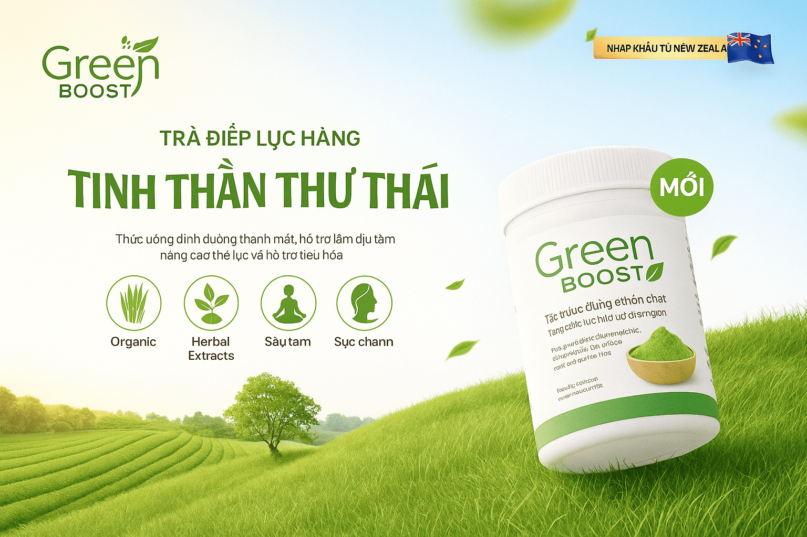
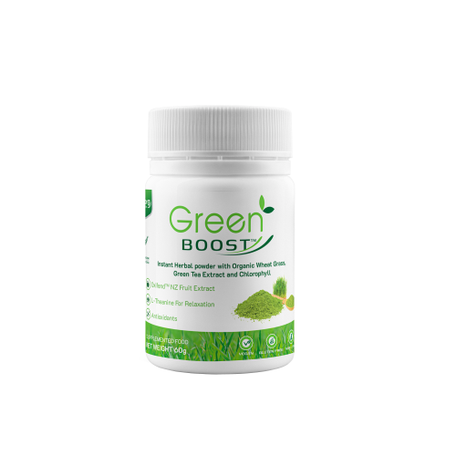

Trà Diệp Lục Thải Độc Cơ Thể GreenBoost – Bí Quyết Làm Sạch Cơ Thể Và Giảm Mỡ Nội Tạng Hiệu Quả
Trong nhịp sống hiện đại, cơ thể chúng ta đang phải gồng mình chống chọi với hàng loạt độc tố từ thực phẩm, không khí ô nhiễm và căng thẳng kéo dài. Hậu quả là gan, thận và hệ tiêu hóa bị quá tải, khiến bạn dễ mệt mỏi, nổi mụn, khó ngủ và tăng nguy cơ béo phì, đặc biệt là mỡ nội tạng – thủ phạm thầm lặng gây bệnh tim mạch, tiểu đường.
Đó là lý do bột rau xanh thải độc cơ thể GreenBoost ra đời như một giải pháp tự nhiên, an toàn giúp thanh lọc, phục hồi và nâng cao sức khỏe toàn diện. Đặc biệt, với chiết xuất trà xanh hỗ trợ giảm mỡ nội tạng, GreenBoost hiện đang là lựa chọn hàng đầu cho những ai muốn "làm sạch" cơ thể và kiểm soát cân nặng bền vững.
GreenBoost – Bột Rau Xanh Thải Độc Cơ Thể Được Tin Dùng
GreenBoost là sản phẩm bột rau xanh cao cấp, kết hợp giữa các loại rau củ, trái cây giàu dưỡng chất với thảo mộc quý hiếm. Sản phẩm giúp thải độc gan, cải thiện tiêu hóa, đồng thời hỗ trợ giảm mỡ nội tạng – yếu tố quan trọng giúp cơ thể thon gọn và khỏe mạnh hơn.
Thành Phần Ưu Việt Giúp GreenBoost Vượt Trội
- Chiết xuất trà xanh chứa L-theanine: Giúp thư giãn, giảm lo âu, cải thiện giấc ngủ và tăng cường sự tập trung tinh thần. Đặc biệt, trà xanh giúp giảm mỡ nội tạng hiệu quả.
- Cỏ lúa mì hữu cơ: Giàu chất chống viêm, giúp tăng cường sức khỏe tiêu hóa, giảm viêm loét đại tràng và hỗ trợ miễn dịch.
- Tổ hợp Oxifend từ quả mọng New Zealand: Chống oxy hóa cực mạnh, giúp ngăn ngừa lão hóa, bảo vệ da và hệ tim mạch.
- Tảo lục chlorella, tảo xoắn spirulina: Hỗ trợ đào thải kim loại nặng, tăng cường đề kháng.
- Lợi khuẩn Probiotic và chất xơ inulin: Giúp cân bằng hệ vi sinh, cải thiện chức năng ruột, giảm táo bón.
6 Lợi Ích Vượt Trội Khi Dùng GreenBoost
- Thanh lọc gan, thải độc cơ thể an toàn
- Cải thiện tiêu hóa, giảm viêm đại tràng
- Giảm lo âu, ngủ ngon, tinh thần tỉnh táo
- Hỗ trợ trà giảm mỡ nội tạng, giúp cơ thể thon gọn
- Chống lão hóa, làm đẹp da, bảo vệ tim mạch
- Tăng đề kháng, ngừa bệnh vặt
Tại Sao GreenBoost Còn Được Xem Như "Trà Giảm Mỡ Nội Tạng"?
Thành phần trà xanh giàu catechin trong GreenBoost hoạt động như một loại trà giảm mỡ nội tạng tự nhiên, giúp đẩy nhanh quá trình đốt cháy mỡ thừa, đặc biệt ở vùng bụng – nơi tích tụ mỡ nội tạng nguy hiểm. Kết hợp với các enzyme thực vật và lợi khuẩn, GreenBoost không chỉ giúp giảm cân mà còn cải thiện chuyển hóa, mang lại sức khỏe bền vững.
Đối Tượng Nên Dùng Bột Rau Xanh GreenBoost
- Người muốn thải độc cơ thể an toàn định kỳ.
- Người có mỡ nội tạng cao, muốn giảm mỡ bụng lành mạnh.
- Người bị viêm đại tràng, tiêu hóa kém, táo bón.
- Người bị stress, mất ngủ, tinh thần sa sút.
- Người muốn trẻ hóa da, chống lão hóa.
Cách Dùng Đơn Giản, Hiệu Quả
- Pha 1 muỗng (5-7g) với 150-200ml nước lọc.
- Uống vào buổi sáng khi bụng rỗng hoặc trước bữa ăn 30 phút.
- Duy trì đều đặn 1-2 lần/ngày trong 2-3 tháng.
GreenBoost – Bí Quyết Làm Sạch Cơ Thể Và Giảm Mỡ Nội Tạng Từ Bên Trong
Bột rau xanh thải độc cơ thể GreenBoost không chỉ giúp làm sạch gan, ruột, tăng đề kháng mà còn hỗ trợ giảm mỡ nội tạng an toàn nhờ chiết xuất trà xanh thiên nhiên. Hãy bắt đầu hành trình thanh lọc và giảm mỡ bụng ngay hôm nay để cảm nhận sự khỏe khoắn, nhẹ nhàng và thon gọn hơn mỗi ngày!
>>- Các bài viết liên quan